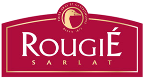
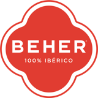

Cocina de mar y vino blanco en el Puerto de Mazarrón
Descubre la carta

Producto fresco, mar de Mazarrón y un toque caprichoso.
Blancos atlánticos para el marisco, tintos con alma y burbujas para celebrar.
Un rincón marinero en el Puerto de Mazarrón.
Asegura tu sitio en sala o terraza. Reserva online en menos de un minuto.
Reservar ahoraEn pleno Puerto de Mazarrón, a un paso del mar.
C/ de la Isla, 5
[Añadir horario]
Buscamos gente con ganas y respeto por el producto. Déjanos tu CV y te escribimos.